- Says
- “We invest in design, but I can’t tell if it’s paying off.”
- Needs
- One honest number, in plain words, and the few things to do next.
The short version
Turning a consultant’s maturity assessment into something any organisation can run on itself.
- Problem Organisations don’t know how mature their UX is, so they can’t see what to fix first or why an agency could help.
- Users Founders, product heads and CX leads who want an honest picture, and PeepalDesign consultants who follow up.
- Brief A self-serve assessment that is quick to run, grounded in evidence and open about what it doesn’t know.
- Outcome A working web app and a Claude skill for evidence that lives behind links, both now in pilot.
My part I owned the whole product: problem framing, the maturity framework, the scoring logic, the AI prompts and guardrails, the UX and UI on our design system, and the build, with Claude as my pair.
The problem
In our sales conversations, the same pattern kept coming up. Leaders knew something about their product experience wasn’t working, but they couldn’t say what, or how they compared with anyone else. Some thought a design system meant they were mature. Others had strong research teams but no way of showing its value to the business.
A proper UX maturity assessment answers this, but it usually means weeks of interviews and workshops. That is too big a first step for a client who isn’t sure they have a problem. For PeepalDesign it meant long discovery before we could show any value.
- Organisations had no quick, credible way to see where they stood or what to improve first.
- PeepalDesign spent its first meetings collecting basic facts instead of advising.
- Both sides lacked a shared language for “how good are we at design?”
A lean approach: build the smallest thing that tests the idea
I ran the project as a Lean UX loop. Instead of a long requirements phase, we wrote down our assumptions, turned the riskiest into a hypothesis and built the smallest working version that could prove or disprove it. Each round of feedback, often a single comment on the live prototype, became the next change.
We believe that giving leaders a quick, evidence-based maturity score from documents they already have will help them see where their UX stands and what to fix first. We’ll know we’re right when they finish an assessment, trust the result enough to act on it, and ask PeepalDesign for help with the gaps.
The assumptions we tested, riskiest first
- Leaders already have enough evidence. OKRs, research reports, design-system docs and NPS exports exist in most organisations. They just aren’t read together.
- AI can read that evidence fairly, if we give it a clear framework and forbid it from inventing anything.
- People will trust a score only if they can see why. So every score needs sources, and the tool has to admit when it doesn’t know.
- A self-serve result opens better conversations than a cold pitch, because the client arrives with their own gaps in hand.
- Says
- “I need evidence to make the case for research and a design system.”
- Needs
- A breakdown by area, with sources, to take to leadership.
- Context
- Meets prospects who can’t yet describe their own problem.
- Needs
- A starting picture before the first meeting, so the meeting is about solutions.
What it had to do
Business requirements
Why PeepalDesign needs it
- Give prospects a credible first result in minutes, not weeks.
- Show PeepalDesign’s expertise before a sales call.
- Turn each assessment into a warm, informed lead.
- Use a framework our consultants can stand behind and explain.
- Keep clients’ documents private: nothing is stored on our servers in the pilot.
- Carry the PeepalDesign brand, built on our own UI kit.
Functional requirements
What the product does
- Sign up and log in; one assessment per organisation, which can be updated later.
- Accept PDF, Word, text, CSV, web pages, screenshots and ZIP files, and sort them into the six areas.
- Check every file before analysis: format, size, readability, and which areas are covered.
- Score each area from 1 to 5 against named practices, with sources and confidence.
- Produce an overview, area detail, action plan and product checks, plus a downloadable report.
- Read evidence behind links (websites, Figma, decks, Notion, Confluence, Google Docs) through a companion skill.
What made it hard
- AI will score anything. Give a language model three thin documents and it will still return a confident number. Our biggest design problem was stopping the product from sounding more certain than its evidence.
- Evidence lives behind links, and links were blocked. Much of a company’s design thinking sits in Figma, Slides, Notion and Confluence. Organisation security policies blocked the Figma connector, and the app’s sandbox can’t fetch websites. Users kept seeing “not enough readable evidence” for links they knew were full of content.
- Formats are messy. PowerPoint and Keynote files couldn’t be read directly, long PDFs could crowd out everything else, and screenshots carry no text.
- Two very different readers. A CEO wants one number and three actions. A design lead wants practice-level detail and sources. The same report had to serve both.
- Maturity isn’t a single snapshot. Organisations add evidence over time, so a new upload has to build on earlier findings rather than start again.
How my thinking changed along the way
From a questionnaire to the organisation’s own evidence
My first idea was a self-assessment survey, which is quick to build and familiar. But self-reported maturity is usually optimistic, and it tells a consultant nothing new. So I chose to assess the documents organisations already have. This takes more effort from users, but the result reflects what they actually do, not what they believe they do.
From one AI judgement to a pipeline with rules around it
Early versions sent everything to the model and showed what came back. I moved every decision that should be predictable out of the model and into plain code: sorting files into areas, checking quality, deciding when there is enough evidence to score, and averaging the overall score. The model does the one thing only it can do, which is read documents against a rubric. Everything around it can be explained and tested.
From hiding uncertainty to designing around it
I first treated thin evidence as an error to block. Reviewing the prototype, I saw that “not enough readable evidence” left people at a dead end, with no way forward. So I turned it into a visible, live confidence score with specific fixes for each area. Each gap now comes with a way to close it.
From reading links in the app to reading them where the user is signed in
When organisation policy blocked the Figma connector, I removed link reading from the app entirely rather than leave a feature that failed silently. In its place I built uxmco, a Claude skill that works in the user’s own browser, where they are already signed in. More on this below.
How the engine works
Score only what the evidence shows, and show how much evidence there is. The pipeline below runs every time someone clicks Analyse. Steps in plain code are predictable and testable. The AI step is constrained by a rubric, a strict output format and a validation pass.
1 · Collect
Files: PDF, Word, text, CSV, HTMLScreenshots and imagesOne ZIP, unpacked in the browserLinks, through the uxmco skill2 · Read
Extract text from each filePDFs: first 60 pagesImages: read by Claude’s visionUnreadable files flagged, not dropped silently3 · Sort
Match file names and text to keywords for each of the six areasA file can count for more than one areaRule-based, so users can predict it4 · Pre-check
Area confidence from 0 to 100%Report confidence: the averageFixes for each gapAnalyse is locked below 3 of 6 areas5 · Pack
Combine documents into a 40,000-character evidence packFair share: short documents are kept whole, long ones are trimmed6 · Assess (AI)
One call per areaRate each practice: strong, partial, mixed or noneUp to 2 cited sources per practiceScore 1–5, confidence, one action7 · Validate
Fewer than 2 evidenced practices means no score for that areaScores are clamped to 1–5Only real document names count as sources8 · Combine
Overall score: the average of the scored areasNeeds 3 or more scored areasCoverage: share of practices with evidence9 · Report
Overview and radar chartSix areas, with sourcesAction plan and product checksDownloadable reportWhy each rule exists
- Sorting by keyword. Users see instantly where each file landed and can rename a file to move it. The file naming guide teaches the pattern
area_document-type_team_YYYY-MM. - A fair-share evidence pack. The model can only read so much at once. Short documents are kept whole and long ones trimmed, so one 200-page PDF can’t drown out a one-page OKR sheet.
- “None” means not evidenced, not proven absent. The prompt and the interface both say this, so a missing practice reads as “we didn’t see it”, not as “you don’t do it”.
- Two practices before a score. A single mention of a design system doesn’t show a repeatable practice, so an area needs at least two practices with evidence before it gets a number.
- Updates build on earlier findings. When new evidence is added, the model gets its earlier findings and keeps them unless the new documents clearly show something different. The assessment matures with the organisation.
What we judge against
The framework draws on the structure of established UX maturity models, such as Nielsen Norman Group’s, which look at strategy, culture, process and outcomes. I extended it with customer research and people, because those were the gaps we saw most often with clients, and wrote every practice in plain language a CEO would recognise.
| Area | The question it answers | Practices checked |
|---|---|---|
| Strategy | Is customer experience part of the business plan? | Leadership sponsorship · written experience strategy · shared business goals · customer-experience vision · return on design investment |
| Customer research | Do decisions start from what customers need? | Talking to customers · testing before launch · customer profiles · customer journeys · using customer data · watching competitors |
| Design | Is the product designed with care and consistency? | Trying ideas before building · teams designing together · shared design system · accessibility · inclusive design · freedom to design well |
| People | Does the organisation have the right skills and roles? | Working across departments · owning customer satisfaction · skills and career paths · training · enough research capacity |
| Culture | Do people act on customer insight and try new ideas? | Acting on customer insight · employees suggesting ideas · time to experiment · rewarding good ideas |
| Metrics | Does the business measure the experience it delivers? | Customer satisfaction scores · product analytics · ease-of-use measures · experience goals per project · linking design to results |
A five-level scale, written for leaders
Each area, and the organisation overall, lands on one of five levels: Absent (experience is left to chance), Limited (good work depends on individuals), Emerging (good practice is repeatable in places), Structured (experience is built into how products are made) and Integrated (experience shapes strategy). The report pairs each with a plain word, from “Very early” to “Leading”.
Product checks use established UX principles
When the evidence includes screens or product documents, a separate pass reviews the product itself:
- Usability: up to five problems, each mapped to one of Nielsen’s 10 usability heuristics and rated from 1 (minor) to 4 (critical).
- Accessibility: five basics aligned with WCAG: readable text and contrast, keyboard use, visible focus, forms anyone can complete, and screen-reader support. Each is marked good, issue or unknown.
- Fair design: up to three patterns that could pressure or mislead customers, presented as flags to check, not verdicts.
Designing with AI, responsibly
I used Anthropic’s AI Fluency framework, the “4Ds”, as a checklist for every AI decision. It kept two questions in front of me: what should the AI do, and how will people know whether to believe it?
Delegation
Give the AI only the job it does best
- AI reads documents and rates practices against a rubric.
- Code handles sorting, gating, maths and storage, so results are repeatable.
- People make the decisions: the client chooses what to share and the consultant interprets the result.
Description
Tell it exactly what good looks like
- Named practices, each with a one-line definition.
- Defined states (strong, partial, mixed, none) and a strict JSON reply.
- Instructions to write for a busy CEO: plain words and short sentences.
Discernment
Check the output before anyone sees it
- Validation removes scores that rest on fewer than two practices.
- Sources must match real document names.
- Confidence (High, Medium, Low) is shown beside every score.
Diligence
Be honest and careful with people’s data
- Documents are treated as data, never as instructions, which guards against prompt injection.
- No invented evidence, numbers or sources.
- Pilot accounts and assessments stay in the user’s browser.
The interaction principles behind it
Before the AI runs, the evidence page tells users what to share, how to name it and what the result will need. After it runs, every practice lists its evidence and the document it came from, so a sceptical reader can check it. Confidence sits next to every number, so a 4 based on one memo never looks like a 4 based on ten reports.
Failures always come with a next step, whether the problem is a format we can’t read, a file that is too large or a link behind a login. And users stay in charge of their data: they choose what to share, can update the assessment, and can rename or delete it at any time.
Showing confidence, so users know how good the report is
Show the quality of the evidence before analysis starts. This was the most important design decision. As soon as files are added, each area card shows its own confidence, what was read and what to do next. The report confidence at the top updates live.
Area confidence
How each area earns its score
File checks
What gets flagged, and how to fix it
- Format not accepted: PowerPoint or Keynote. Fix: export to PDF.
- Too large: over 25 MB is rejected; over 10 MB is slow and may be trimmed.
- Thin or unreadable: scanned or image-only files. Fix: a text version or clear screenshots.
- Long document: only part of it fits the evidence pack. Fix: split it or upload key sections.
1–2 areasBlockedAnalyse stays locked: “Upload documents for at least 2 more areas to continue.”
3–5 areasReady, with a nudge“You can analyse now. Adding Culture will raise your report confidence.”
6 areasFull pictureAll areas covered. Confidence now depends on the depth and mix of evidence.
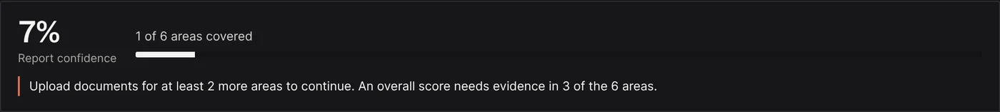
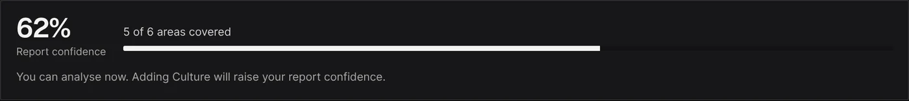
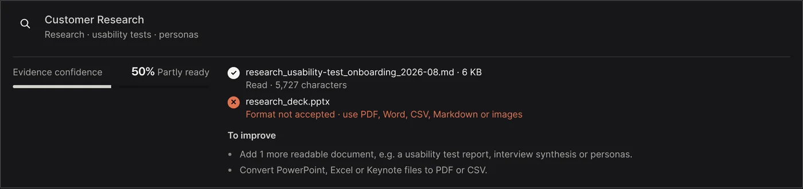
The same honesty carries into the report. Areas without enough evidence say “Not rated yet” and name the documents that would allow scoring. The overall confidence is High only when most scored areas have High confidence, and Low when half or more are Low.
When links can’t be read: the uxmco skill
Much of the most useful evidence isn’t a file. It is a live website, a Figma prototype, a Google Slides strategy deck or a Confluence research space. The app couldn’t reach these: its sandbox blocks outside websites, and our organisation’s policy disabled the Figma connector. Rather than ask users to export everything by hand, I designed a companion workflow as a Claude skill called uxmco.
- Finds the link for you. It uses the link in the request, or the page open in the user’s browser, and only asks if there is neither.
- Reads each type properly. Websites are crawled within the same domain (up to 25 pages). Figma frames are stepped through and their text read. Decks are read slide by slide, including speaker notes. Notion and Confluence child pages are followed.
- Never works around security. If a page needs a sign-in, the user signs in themselves; the skill never enters credentials and never bypasses permission screens.
- Turns problems into choices. Alerts appear as questions in the chat: add a link, retry after signing in, skip, or continue anyway. Continuing is offered only for warnings, never for blockers.
- Ends with a link. The result is published as a private page with every score, source, alert and the evidence table, plus an optional ZIP the user can upload to the app.
What users see
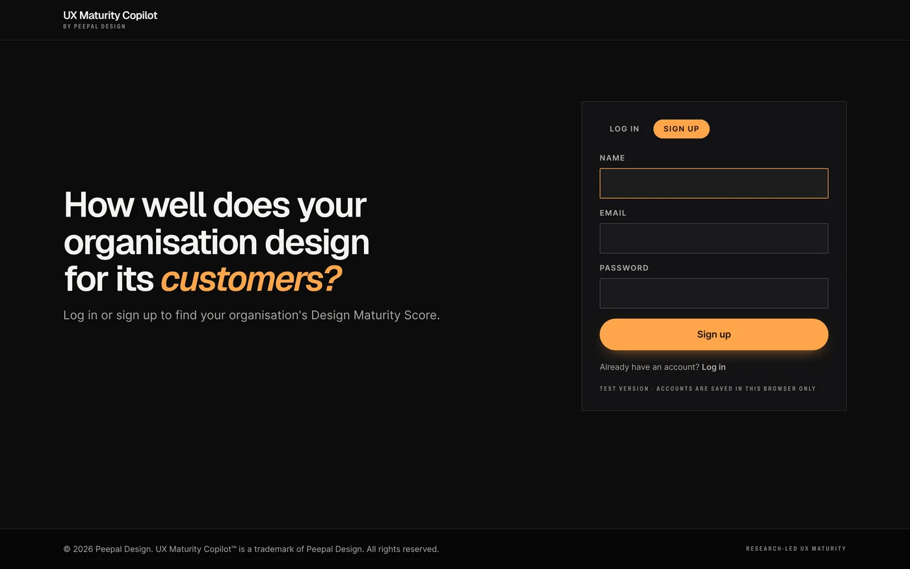
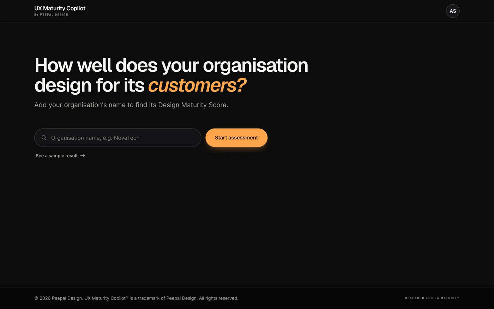
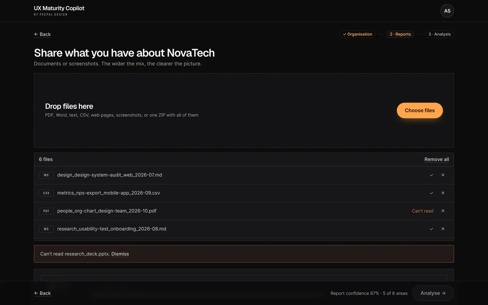
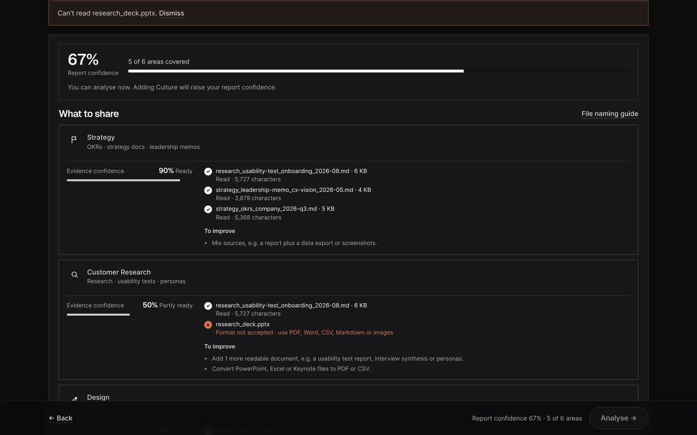
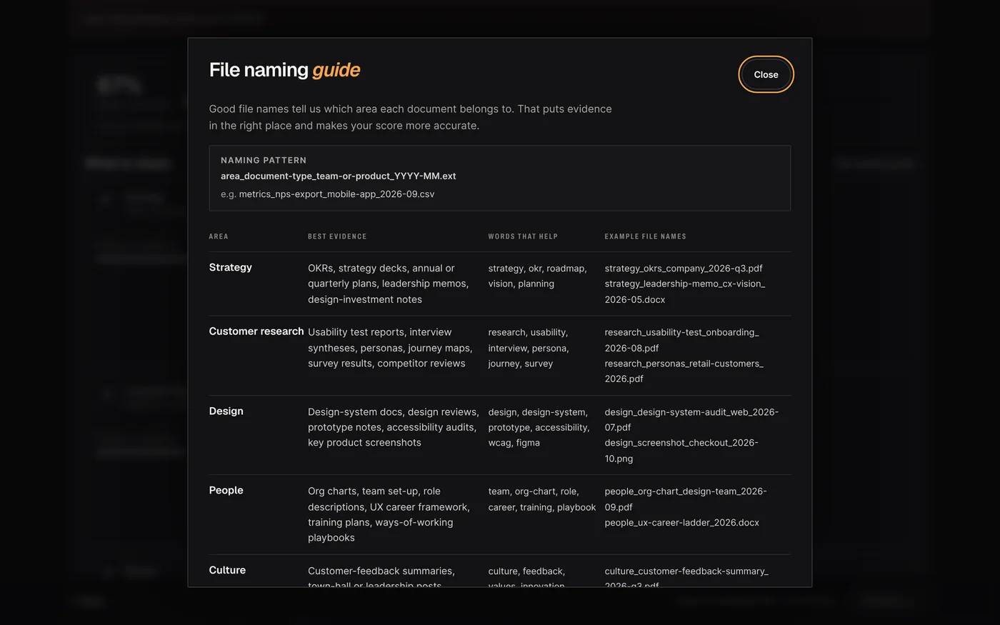
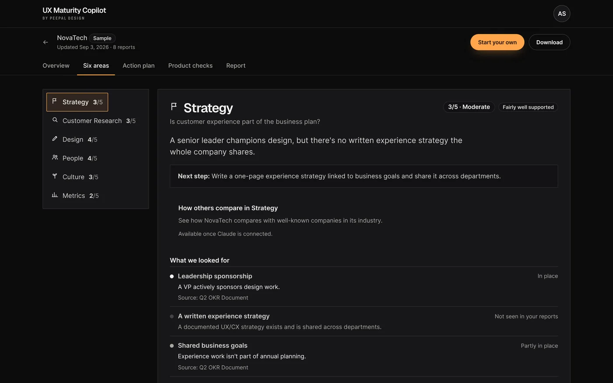
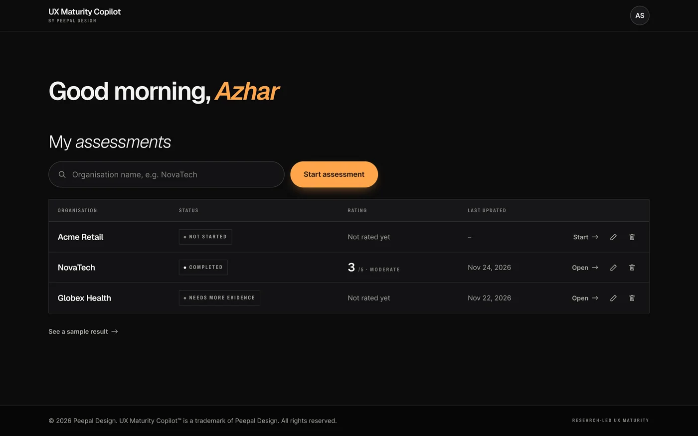
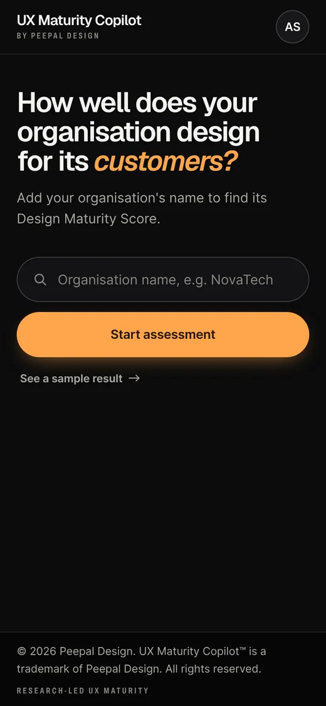
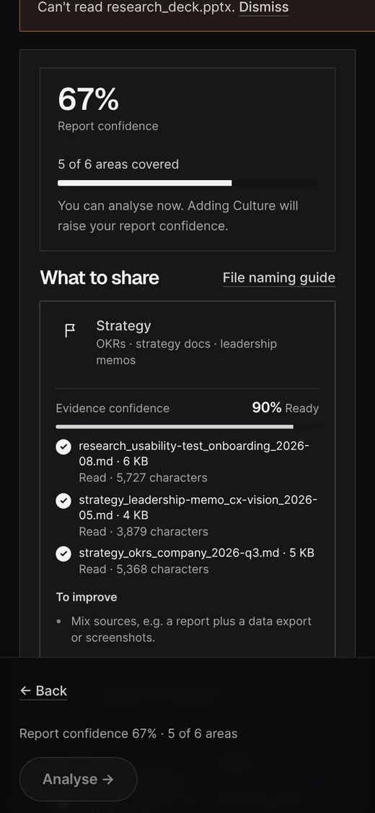
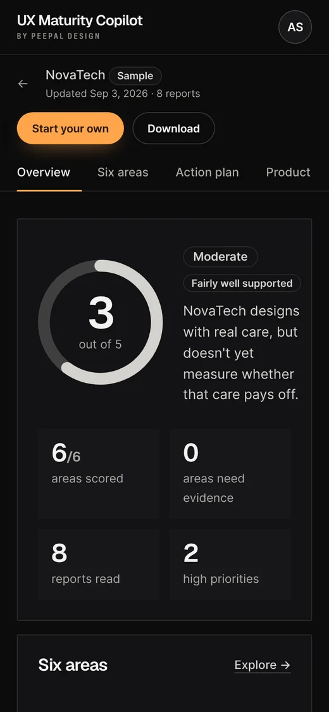
Where it is now
- A working pilot, built on PeepalDesign’s UI kit: sign-up, dashboard, evidence checks, AI assessment, report and export.
- The uxmco skill extends the same assessment to websites, Figma, decks and workspace pages that the app can’t reach.
- Every comment became a change. More than 20 rounds of feedback on the live prototype shaped the flow, from the progress header to the assessments table.
- What we’ll measure in the pilot: sign-up to report completion, the share of reports above 60% confidence, time to first report, consultation requests, and how closely the tool’s scores match a consultant’s.
What didn’t go to plan
Reading links inside the app didn’t work. I built a Figma reader into the app, but organisation policy blocked the connector, and websites can’t be fetched from the sandbox. Users saw a feature that looked available but failed. I removed it and moved link reading into the uxmco skill, which works where the user is already signed in. It means two tools instead of one, but each works reliably.
Keyword sorting is predictable, but not perfect. A research report that talks about the roadmap also counts towards Strategy. I accepted this because users can see it and fix it by renaming files, and an over-counted area can still only be scored on its practice-level evidence.
No real numbers yet. The pilot accounts are stored in the browser, and we haven’t run it with enough clients to report outcomes, so this case study doesn’t claim any.
What I’d do next
I’d start by testing the score itself: have consultants assess the same five organisations by hand and compare their ratings with the tool’s, practice by practice. If the scores match, consultants and clients have a reason to trust them. After that, I’d add proper accounts and a consultant view, so PeepalDesign can follow up with context, then AI-suggested sorting that the user confirms, and benchmarks against similar organisations.
The model was the easiest part to get working. Most of the design work sat around it: deciding what the AI should and shouldn’t do, and helping people judge when to trust its answer.